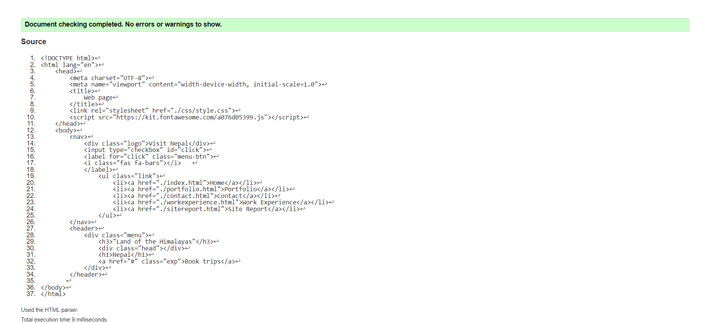
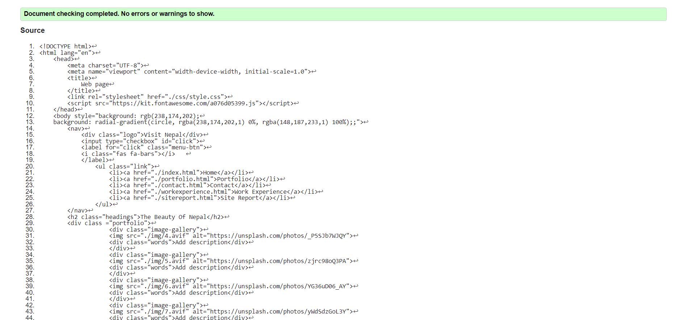
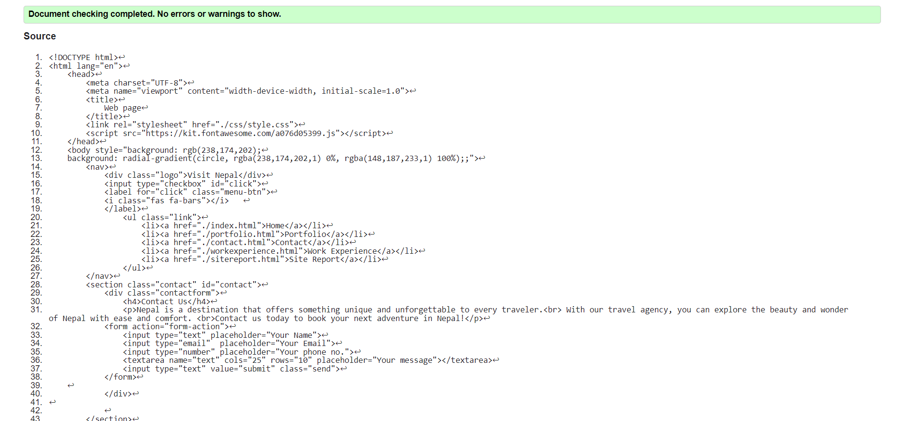
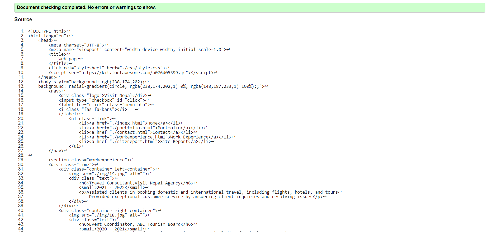
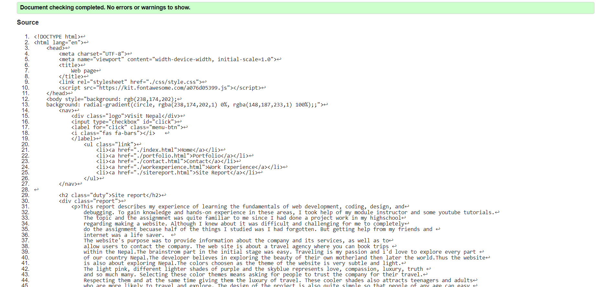
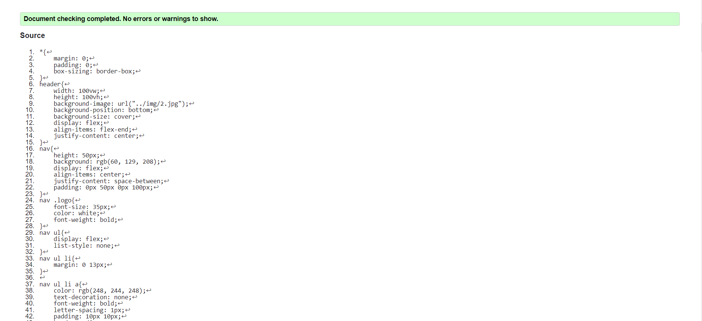
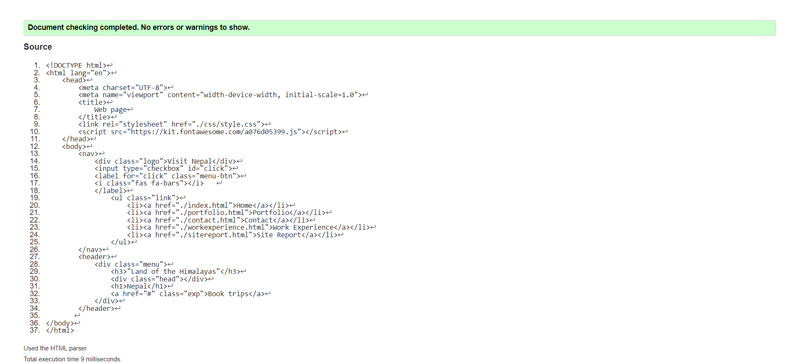
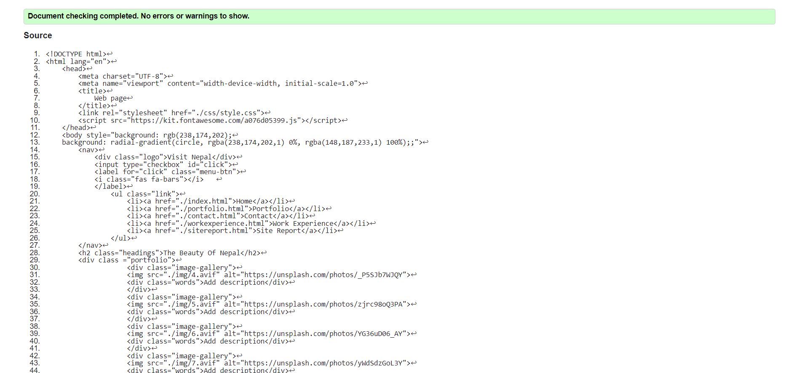
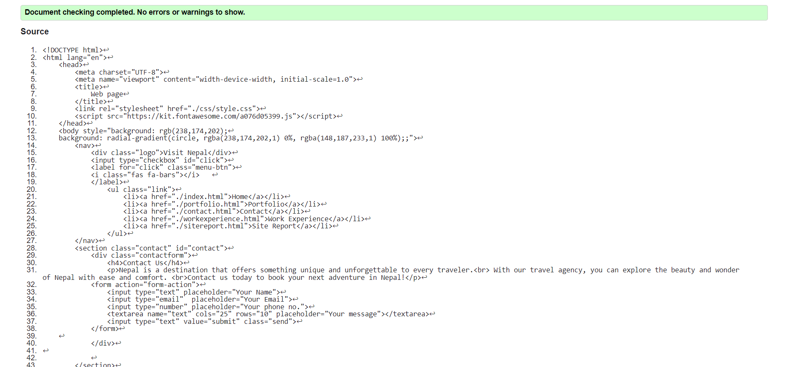
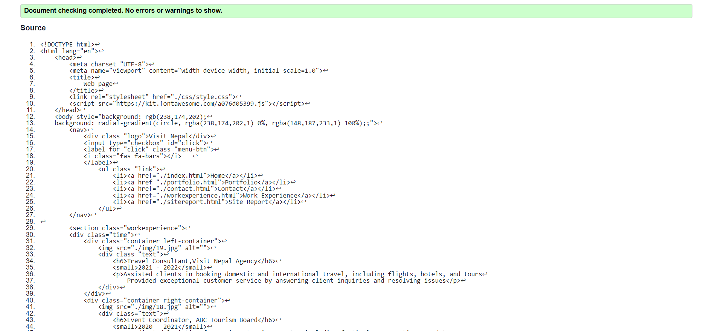
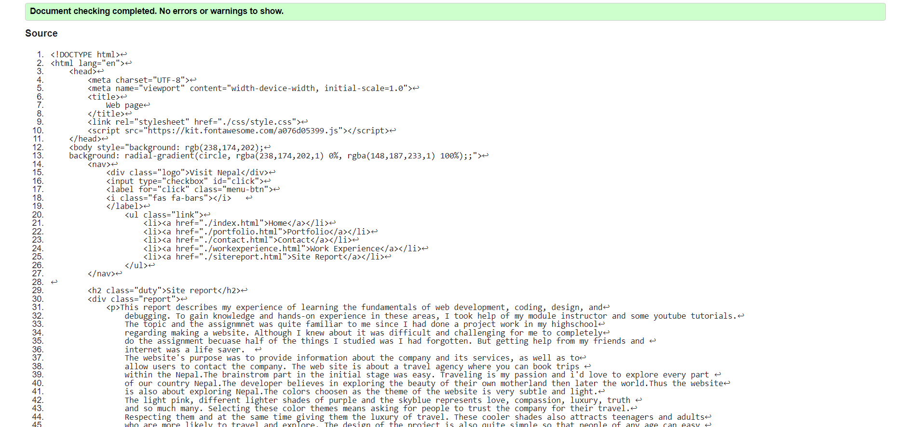
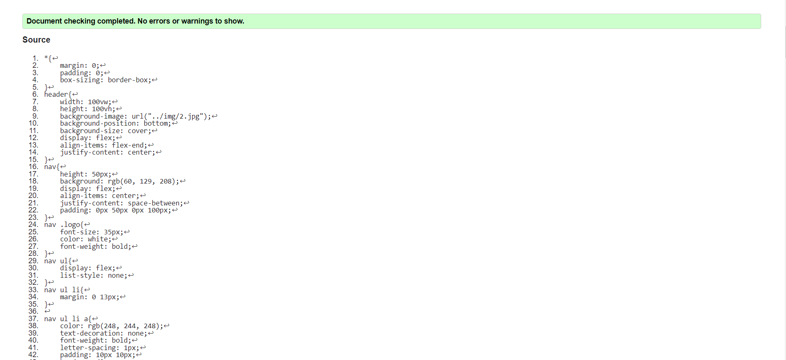
This report describes my experience of learning the fundamentals of web development, coding, design, and debugging. To gain knowledge and hands-on experience in these areas, I took help of my module instructor and some youtube tutorials. The topic and the assignmnet was quite familiar to me since I had done a project work in my highschool regarding making a website. Although I knew about it was difficult and challenging for me to completely do the assignment becuase half of the things I studied was I had forgotten. But getting help from my friends and internet was a life saver. The website's purpose was to provide information about the company and its services, as well as to allow users to contact the company. The web site is about a travel agency where you can book trips within the Nepal.The brainstrom part in the initial stage was easy. Traveling is my passion and i'd love to explore every part of our country Nepal.The developer believes in exploring the beauty of their own motherland then later the world.Thus the website is also about exploring Nepal.The colors choosen as the theme of the website is very subtle and light. The light pink, different lighter shades of purple and the skyblue represents love, compassion, luxury, truth and so much many. Selecting these color themes means asking for people to trust the company for their travel. Respecting them and at the same time giving them the luxury of travel. These cooler shades also attracts teenagers and adults who are more likely to travel and explore. The design of the project is also quite simple so that people of any age can easy use the website. I found the web development course module to be both challenging and rewarding.I underestimated the assignment and it brought me alot of challenges. There were two difficult parts of the assignmnet. The first was github. Activating github and getting the github to work and commit the push the first folders became a task for me. Secondly making the hamburger menu work was a challenge. I tried so many times but the codes were incorrect or simply i didn't know how to do it. But after many tries I made it. The sense of relief i got after completing the assignment was immeasurable. I've learned so many things,not only learned but to practially do it myself. The brief was also very helpful and without it I would have been clueless. This module turned out to be the most fun and easy learning environment. The course material was well-organized and easy to follow, with a good mix of theory and practical examples. One of the key takeaways from the module was learning how to create responsive websites that work well on all devices and manly to have patience and not giving up if you can't do something. This was not a new concept to me, but i've finally understood how to do it a right way. After the completion of this module I can now make a responsive and attractive website.
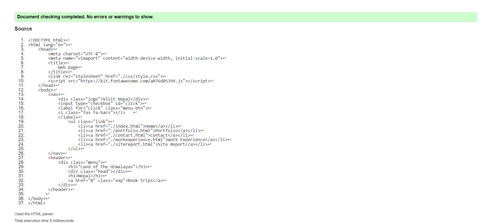
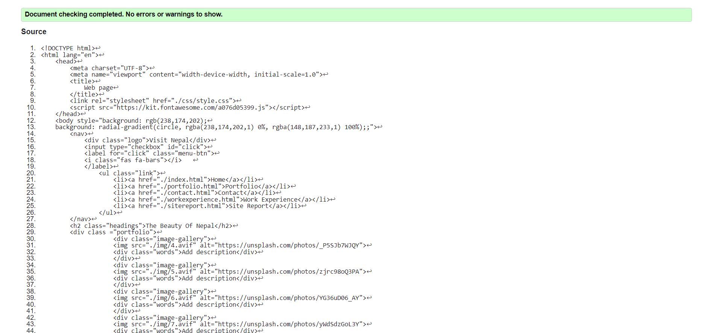
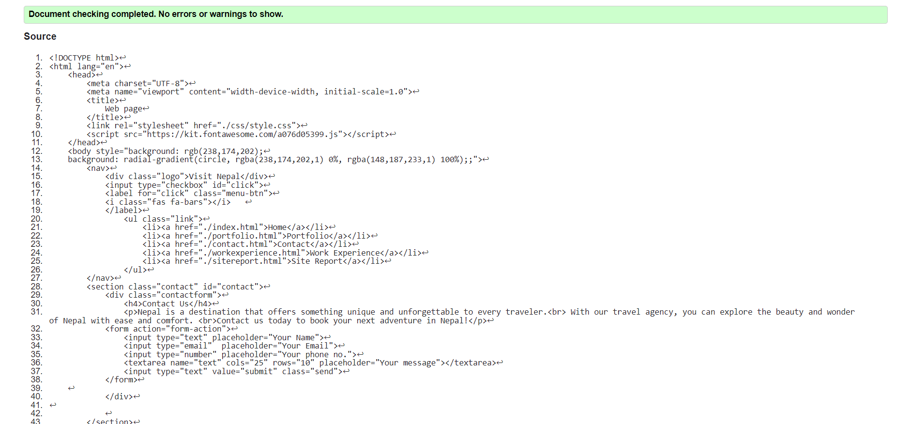
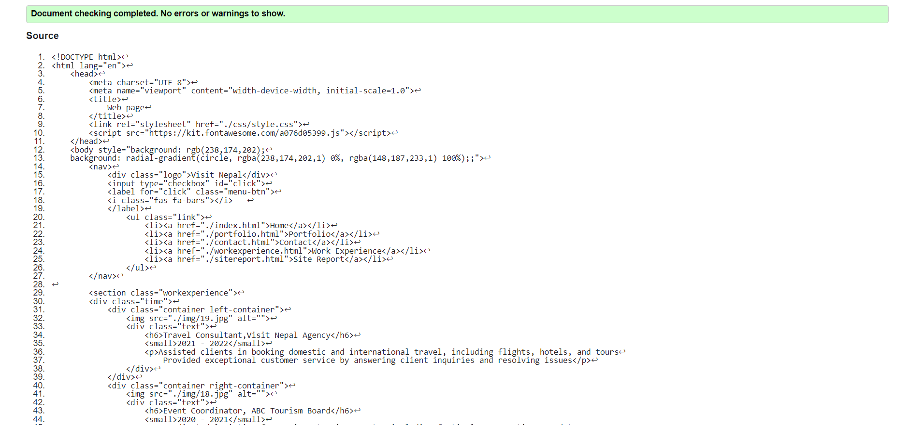
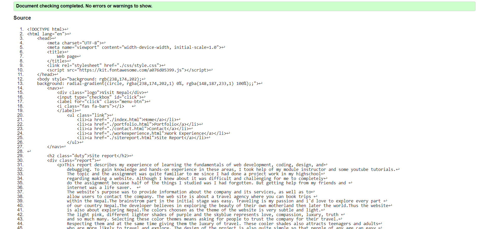
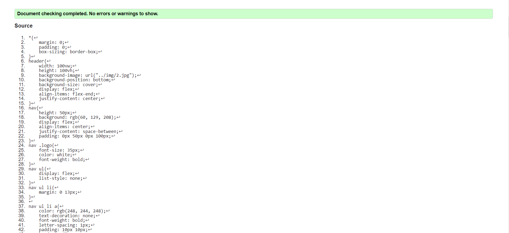